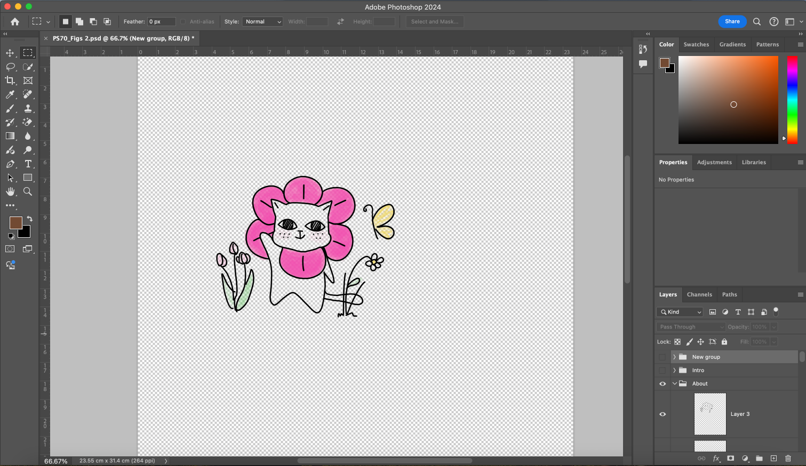

HEY! I'M ALYSSA.
I am a current senior at Harvard College studying Bioengineering working to build on the intersection of biomaterials and augmentation of the human body.
Much of my time has been spent in tissue engineering— particularly on fabricating human vascular structures from scratch.
However, my recent interest in wearable device applications has led me to pivot towards large scale human interfaces.
Currently, my senior thesis project involves a collaboration with Mass Eye and Ear, where I am working to fabricate a realistic model of the human outer ear to investigate cartilage-mediated sound transmission.
I built this website from scratch to showcase all of my interests and work together in one coherent platform.
Here you’ll find a mix of my technical work from school and projects I’ve pursued out of personal passion.
HELLO WORLD
HOBBIES ETC.
When I’m not working, I spend time creating and tinkering.
I enjoy working with my hands and bringing my ideas to life.
Fun fact— every illustration on this website was hand drawn by me.

My most prominent hobby, however, is photography.
I first discovered film photography in college through an elective and was immediately captivated by the intimate, meditative process of bringing an image to life from start to finish.
Ever since, I have been working on an ongoing project where I have built a 35mm camera and shooting on it.
If not tinkering, I'm most likely outside.
Growing up in rural southeastern Ohio, I learned to spend a lot of time outside.
Camping, hiking, cycling, swimming, name it all!